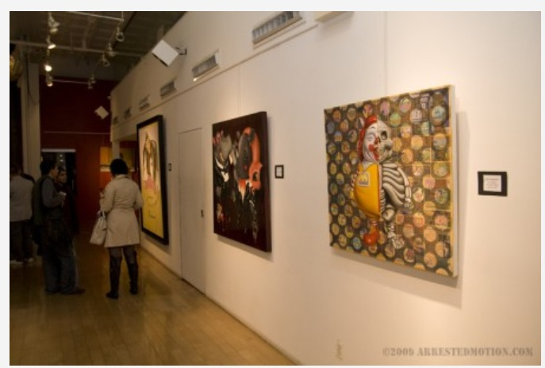
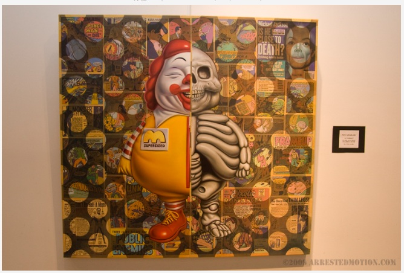
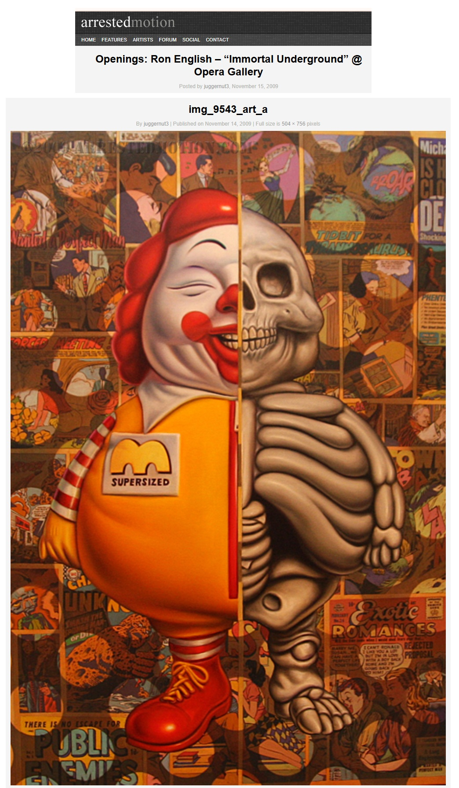

Exhibitions
Nimbus Vapor, Opera Gallery, New York, New York, US, October 1, 2009. Curated by Ron English.
Immortal Underground, Opera Gallery, New York, New York, US, November 12–December 2, 2009.
Literature
Ron English, Status Factory: The Art of Ron English (San Francisco: Last Gasp of San Francisco, 2014), p. 24. ISBN 978-0867197891.
Ron English, Death and the Eternal Forever (Korero Press, 2014), p. 166. ISBN 978-0957664920.
Ron English, Fauxlosophy: The Art of Ron English (San Francisco: Last Gasp, 2016), p. 80. ISBN 978-0867196566.
Ron English, Original Grin: The Art of Ron English (Paris: Cernunnos, 2019), p. 81. ISBN 978-2374950938.
Exhibitions
Pop Rhapsody, Mondo Bizzarro Gallery, Rome, Italy, March 31–April 29, 2012.
Notes
This work references Ronald McDonald.
Ancillary Documentation
The following materials document source imagery and exhibition-related appearances associated with the work.




Selected Online Circulation
Selected examples of the work’s online circulation, reproduction, or discussion. This list is not exhaustive; it is intended to document representative appearances of the image beyond formal exhibition and publication records.